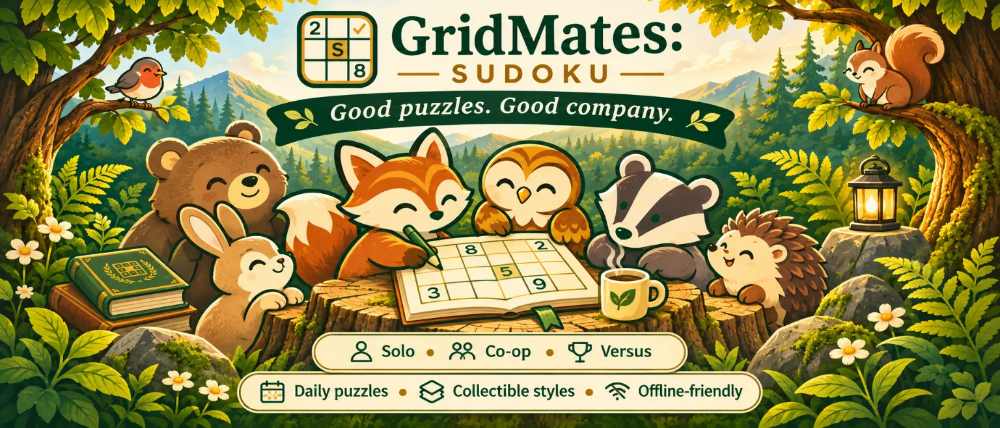

Classic Sudoku
Traditional 9×9 puzzles, pencil notes and Undo.
A game by Spudacus
Good puzzles. Good company.
Solve at your own pace, practice logical techniques or share a puzzle with a friend nearby.

Traditional 9×9 puzzles, pencil notes and Undo.
A daily challenge to enjoy at your own pace.
Logical help and practice when you need a hand.
Share a board with another Android device on reachable local Wi-Fi.
Race a friend on matching puzzles with separate boards.
Earn cosmetic customization and follow your local progress.
Solo and Daily are designed for offline play without a gameplay account. Nearby multiplayer requires two compatible devices on the same reachable Wi-Fi network. Use a trusted network: the local game protocol is not encrypted. Internet matchmaking and account-based cloud recovery are not advertised features.
Check the itch.io project for the current Android download, requirements and release-specific instructions. Before updating or changing devices, export a progress backup if your installed version offers that feature, and keep the original installation until your progress is verified.
If Android refuses an update: stop and check the release instructions. Do not uninstall or clear app data to bypass a signature mismatch. Different public and preview packages may not update one another, and portable backups have limitations.
Dedicated support and product privacy information are not yet available. Do not send personal information through this site.